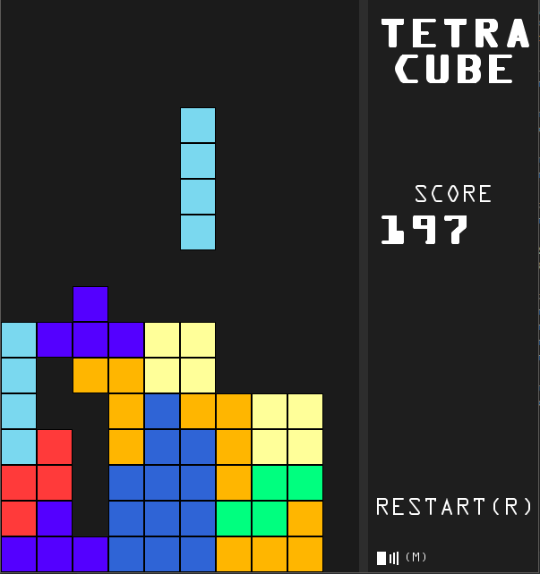

Tetracube
Tetracube is a NES Tetris clone recreated using Python along with Pygame.
Link to Github
Tetracube features mechanics very similar to the NES Tetris game released
- Exact same tetromino pseudorandom generation
- Rotation mechanics follow NES game
Other features
- Mouse and Keyboard controls to mute and restart
- W, A, S, D or arrow keys

Video located below